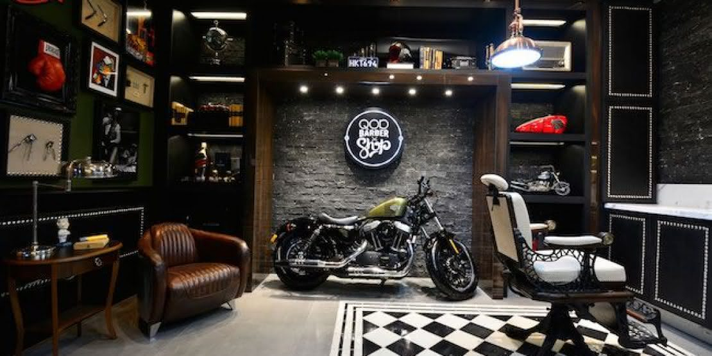

Fundador da Best Barber, mestre barbeiro especialista em corte de cabelos masculinos, há 12 anos no mercado.

Cortes masculinos de barba e cabelo.
Sempre visando a qualidade!
Conheça nossos profissionais
Há mais de 6 anos formado como barbeiro, especializado em cabelos crespos masculinos.
Caio
Há mais de 7 anos formado como barbeiro, especializado em cortes de barba.
Vagner
Há mais de 5 anos formado como barbeiro, especializado em cortes artísticos.